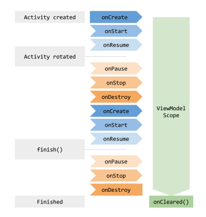
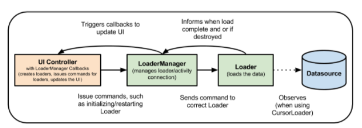

ViewModel 클래스는 Lifecycle을 고려하여 UI 관련 데이터를 저장하고 관리 할 수 있도록 설계되었다. 때문에 화면 회전과 같이 구성이 변경될 때도 데이터를 유지할 수 있다.
개요
ViewModel 클래스는 Lifecycle을 고려하여 UI 관련 데이터를 저장하고 관리 할 수 있도록 설계되었다. 때문에 화면 회전과 같이 구성이 변경될 때도 데이터를 유지할 수 있다.
시스템에서 UI 컨트롤러가 재생성 되는 경우, 즉 화면 회전과 같은 경우, 액티비티가 재생성 되게 되고 데이터를 다시 가져와야 할 것이다.
데이터가 간단한 경우는 onSaveInstanceState() 메서드로 번들을 통해 데이터를 복원할 수 있지만 Serialize 과정을 거치기에 소량의 데이터에만 적합.
발생할 수 있는 또 다른 문제는 UI 컨트롤러가 시간이 오래 걸리는 비동기 호출을 자주 할 수 있다는 점.
액티비티, 프래그먼트 같은 UI 컨트롤러의 목적은 UI 데이터를 표시하거나, 사용자 인풋에 반응, 등 커뮤니케이션 처리. 그런데 여기에 DB, Network 통한 데이터 로드 까지 추가하면 클래스가 너무 커지고 코드가 길어진다.
이 때문에, View 데이터 관련 부분을 분리하면 쉽고 효율적으로 구현이 가능하다는 접근.
구현
AAC에는 ViewModel 클래스가 제공된다. ViewModel 객체는 구성이 변경되는 동안 자동으로 보관되므로 다음 액티비티나 프래그먼트에서 즉시 사용할 수 있다.
예를 들어, 앱에서 사용자 목록을 표시해야되는 경우 아래와 같이 ViewModel 에 사용자 목록을 보관하도록 해야 한다.
class MyViewModel : ViewModel() {
private val users: MutableLiveData<List<User>> by lazy {
MutableLiveData().also {
loadUsers()
}
}
fun getUsers(): LiveData<List<User>> {
return users
}
private fun loadUsers() {
// Do an asynchronous operation to fetch users.
}
}
class MyActivity : AppCompatActivity() {
override fun onCreate(savedInstanceState: Bundle?) {
// Create a ViewModel the first time the system calls an activity's onCreate() method.
// Re-created activities receive the same MyViewModel instance created by the first activity.
// Use the 'by viewModels()' Kotlin property delegate
// from the activity-ktx artifact
val model: MyViewModel by viewModels()
model.getUsers().observe(this, Observer<List<User>>{ users ->
// update UI
})
}
}
액티비티가 다시 생성되면 처음 액티비티 에서 생성된 동일한 MyViewModel 객체를 받는다. 액티비티가 끝나면 리소스 정리 위해 ViewModel의 onCleared() 메서드가 호출된다. 단, ViewModel은 View, Lifecycle, Activity context 참조를 포함하는 클래스를 참조해서는 안된다
ViewModel 객체는 LiveData와 같은 LifecycleObservers 가 포함 될 수 있다. 하지만 Observerble 의 변경사항에 대한 처리를 해서는 안된다.
ViewModel의 수명 주기
ViewModel 객체 범위는 ViewModelProvider에 전달되는 Lifecycle로 지정된다.
ViewModel은 Activity Lifecycle이 끝날때 까지, Fragment 분리될 때 까지 메모리에 남아있게 된다.

일반적으로 onCreate() 메서드를 처음 호출할 때 ViewModel 을 생성. 화면 기기 회전될 때 onCreate() 여러번 호출 될 수 있고, 처음 viewmodel 생성되어서부터 액티비티 끝날 때 까지 viewmodel 은 존재하게 됨.
Fragment 간 데이터 공유
액티비티에 포함된 둘 이상의 프래그먼트는 서로 커뮤니케이션 해야 한다고 알려져 있다. 사용자가 목록에서 항목을 선택하는 프래그먼트와 선택된 항목의 콘텐츠를 표시하는 또 다른 프래그먼트가 있는 사례를 가정할때, 두 프래그먼트 모두 인터페이스를 정의해야 하고 액티비티가 두 프래그먼트를 모두 결합해야 되기 때문에 이 사례는 간단히 처리할 수 있는 작업이 아니다. 또한 두 프래그먼트 모두 다른 프래그먼트가 아직 생성되지 않았거나 표시되지 않는 시나리오도 처리해야 한다.
이러한 문제는 ViewModel을 이용하면 해결할 수 있다. 아래 샘플코드와 같이 어플리케이션을 처리하기 위한 액티비티를 활용해 ViewModel 을 공유할 수 있다.
class SharedViewModel : ViewModel() {
val selected = MutableLiveData<Item>()
fun select(item: Item) {
selected.value = item
}
}
class MasterFragment : Fragment() {
private lateinit var itemSelector: Selector
// Use the 'by activityViewModels()' Kotlin property delegate
// from the fragment-ktx artifact
private val model: SharedViewModel by activityViewModels()
override fun onViewCreated(view: View, savedInstanceState: Bundle?) {
super.onViewCreated(view, savedInstanceState)
itemSelector.setOnClickListener { item ->
// Update the UI
}
}
}
class DetailFragment : Fragment() {
// Use the 'by activityViewModels()' Kotlin property delegate
// from the fragment-ktx artifact
private val model: SharedViewModel by activityViewModels()
override fun onViewCreated(view: View, savedInstanceState: Bundle?) {
super.onViewCreated(view, savedInstanceState)
model.selected.observe(viewLifecycleOwner, Observer<Item> { item ->
// Update the UI
})
}
}
위의 샘플에서 보면, 두 프래그먼트 모두 자신이 포함된 activity 를 통해 동일한 SharedViewModel 인스턴스를 받는다.
이 방법에는 아래와 같은 이점이 있다.
- Activity는 아무것도 할 필요가 없고 위의 관계에 관여할 필요가 없다.
- Fragement 는 SharedViewModel 외에 서로 알 필요가 없다. 둘중 하나가 사라지더라도 다른 하나는 계속 평소대로 작동한다.
- 각 Fragment 는 자체 수명 주기가 있으며 다른 Fragment 수명주기에 영향을 받지 않는다.
ViewModel로 로더 대체하기
CursorLoader 와 같은 로더 클래스는 UI 데이터와 DB 간의 동기화를 유지하는데 자주 사용. ViewModel을 몇 가지 클래스와 함께 사용하여 로더를 대체할 수 있다. ViewModel을 사용하면 UI controller가 데이터 로드 작업에서 분리되어 강력한 참조가 적어진다.
일반적인 로더 사용 방법중 하나로, 앱이 CursorLoader를 사용하고 DB 내용을 Observe 할 수 있다. DB 값이 변경되면 데이터를 새로고치고 UI 업데이트를 진행한다.

ViewModel을 이용하게 되면 Room 과 LiveData 를 이용하여 로더를 대체한다. ViewModel은 기기 서렂ㅇ이 변경되어도 데이터가 유지되도록 한다. DB 가 변경되면 Room에서 LiveData에 변경을 노티하고 노티를 받은 LiveData는 수정된 데이터로 UI 업데이트